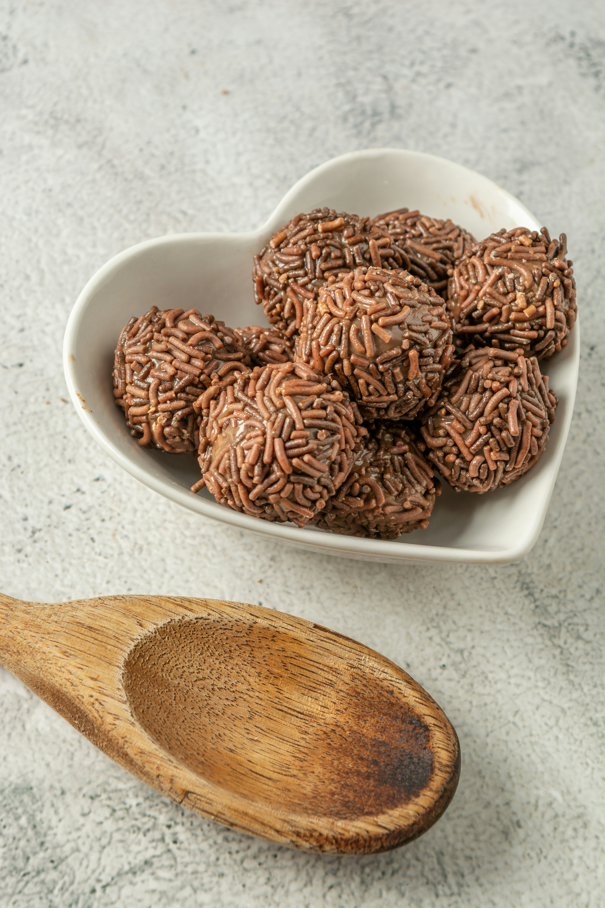

Brazilian Brigadeiro

Description
One of the most loved recipes from the traditional brazilian dessert. Brigadeiro is very famous in Brazil and in recent years many new flavors were created, but this recipe refers to the original brigadeiro.
Ingredients
- 1 can of sweetened condensed milk
- 1 tablespoon of unsalted margarine
- 7 tablespoons of chocolate powder or 4 tablespoons of cocoa powder
- Chocolate sprinkles>
Steps
- In a deep saucepan, add the condensed milk, margarine, and cocoa powder.
- Cook over medium heat and stir until the brigadeiro begins to pull away from the pan.
- Let it cool and form small balls with your hands, rolling the mixture in the chocolate sprinkles.